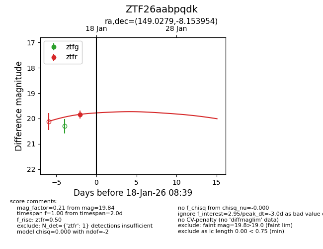
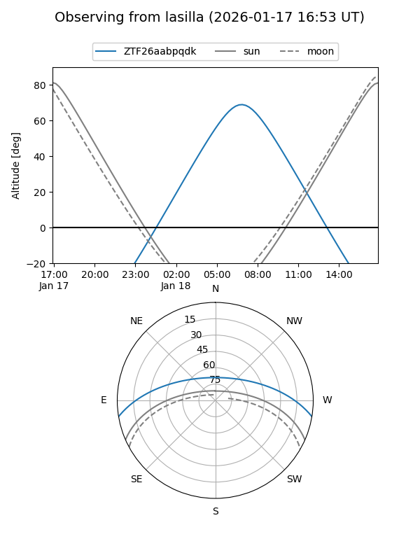
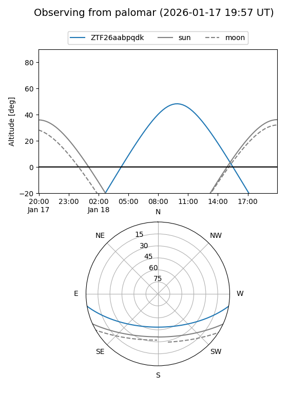
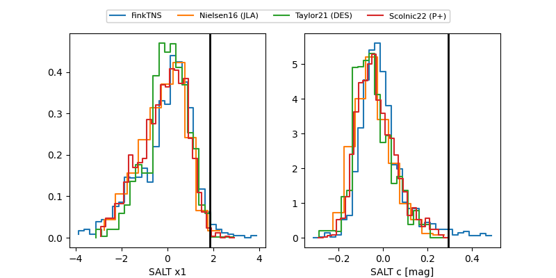

ZTF26aabpqdk
Target ZTF26aabpqdk at 2026-01-18 08:40
Aliases and brokers:
FINK: link
Lasair: link
ALeRCE: link
alt names
ZTF26aabpqdk (ztf,fink_ztf)
Coordinates:
equatorial (ra, dec) = 149.0279,-8.15395
equatorial (HMS+DMS) = 09:56:06.71,-08:09:14.23
galactic (l, b) = (246.3210,+34.80984)
Flags:
Photometry:
last ztfr=19.84
1 ztfr detections
Lightcurve

Visibility


Additional plots
